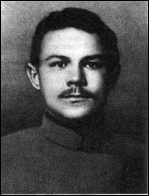

- harun -
|  |
McMillin, pages 12-15 (much of this Introduction is made use of here). . Born in Mensk as Alaksandr Prushinski (Prushynski), Harun came from a poor but literate family (in which education and culture were valued), and he was able to read both Polish and Russian by the age of five. His father was a manual laborer, although it is possible that both he and Harun's mother derived originally from the minor nobility. An apt pupil, Harun entered a trade school at twelve, and four years later in 1902 he took up work as a joiner, remaining in Mensk until 1907. |
|
. - Buchhandlung Walther Koenig Buchhandlung Walther Koenig Hilfe Kataloge Buechermarkt Verlag Warenkorb Katalog Nr. 110 Kunst Kataloge aktueller internationaler Ausstellungen, Werkverzeichnisse und einige Leseempfehlungen Sommer 2001 Theorie und Leseempfehlungen FAROCKI, HARUN. JahrhundertFotografieMonographien vor 1800Monographien 19. JahrhundertWerkverzeichnisseArchitektur FAROCKI, HARUN. |
 |
Images of the Middle Ages Images of the Middle Ages These images appeared in National Geographic in 1962 in an article "New Views of Medieval Europe" by Kenneth Setton. 451 CE) The Emperor Justinian berated by his wife Theodora (532 CE) Cassiodorus shows visitors his monastery, c. 570 CE Charlemagne contemplates the gift of an elephant from Harun-al-Raschid, c. .. |
|
1996 CINEMA ART DU MOUVEMENT LEMAITRE Maurice F exp. .99 Bilder der Welt und Inschrift des Krieges Farocki Harun 1988 DEU Doc 75 16mm. 99 Etwas wird Sichtbar Farocki Harun 1986 DEU Docu-fict 114 35mm. 99 Videogramme einer Revolution Farocki Harun 1992 DEU Docu-fict 106 16mm. |
read more at: http://www.absolutearts.com